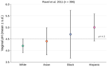

Study design
- Participants
- 396 asymptomatic women of reproductive age
- Groups
- White, Black, Hispanic, Asian
- Assay
- 16S rRNA gene amplicon pyrosequencing
- Clinical measures
- Vaginal pH, Nugent score
Juan Lab · Karolinska Institutet
Most vaginal bacterial communities in reproductive-age women are dominated by Lactobacillus, which acidifies the environment through lactic acid production. This site collects the data we work with, summarises results, and accepts data submissions.
The reference dataset shown here is from Ravel et al. 2011, PNAS 108 Suppl 1:4680–4687: vaginal swabs from 396 asymptomatic North American women in four self-reported ethnic groups, profiled by pyrosequencing of barcoded 16S rRNA genes.
| CST | Dominant taxa |
|---|---|
| I | L. crispatus |
| II | L. gasseri |
| III | L. iners |
| IV | Low Lactobacillus; diverse strict anaerobes |
| V | L. jensenii |
| Group | Mean pH | s.d. |
|---|---|---|
| White | 4.2 | 0.30 |
| Asian | 4.4 | 0.59 |
| Black | 4.7 | 1.04 |
| Hispanic | 5.0 | 0.59 |

Communities clustered into five groups: four dominated by a single Lactobacillus species, and one (CST IV) with fewer lactic acid bacteria and more strict anaerobes.
The proportion of each community type differed among the four ethnic groups (χ²10 = 36.8, P < 0.0001).
Mean pH was higher in Hispanic (5.0) and Black (4.7) women than in Asian (4.4) and White (4.2) women; the spread was widest in Black women (s.d. 1.04).
Preview a taxa abundance table or sample metadata file (CSV or TSV). The file is read in your browser only; nothing is sent to a server.
sample_id,L_crispatus,L_iners,L_gasseri,L_jensenii,G_vaginalis S001,0.91,0.05,0.00,0.01,0.00 S002,0.02,0.10,0.00,0.00,0.41